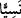
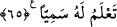

inmemem istendiğinde de inmem.” [36] Bunun üzerine Allah Teâlâ, bu âyeti ve Duhâ
sûresini indirdi.
Âyette geçen “tenezzül (inmek)” yavaşça, bekleyerek inmektir. Buna göre âyete şu
anlam verilir: Allah Teâlâ, Cebrâil’e şöyle demiştir: Muhammed’e söyle ki, “Biz ancak
Allâh’ın emriyle O’nun hikmetinin gereği ara sıra yeryüzüne ineriz.”
“Önümüzde” yani gelecekte olacak âhirete âid şeyler, “arkamızda” yani geçmişte
kalan dünyaya âid şeyler “ve bunlar arasında bulunan” olmuş ve bu günden kıyâmete
kadar olacak olan “her şey O’na” özel olarak Allâh’a “âiddir.”
et-Te’vîlâtü’n-Necmiyye’de şöyle der: “Önümüzde” bulunan ezelî takdir,
“arkamızda” bulunan ebedî tedbir, “ve bunların arasında bulunan her şey” ezelden
ebede kadar ne varsa hepsi “O’na âiddir.”
Bu âyetin benzeri, “Onların önlerinde ve arkalarında olanı bilir...” (el-Bakara,
2/255) âyetidir.
“Rabb’in asla unutkan değildir” yâni ey Muhammed, Hak Teâlâ seni unutmadı. O
senin her hâlinden haberdârdır. O, bizi ne zaman sana göndermek isterse, gönderir.
Müfessirler şöyle demiştir: Âyette geçen “__WORD__” kelimesi unutmak anlamındaki ‘ __WORD__’
kelimesinden türemiş olup terk etmek demektir. Yani her ne kadar bir maslahattan dolayı
bir ân için Rabb’in vahyi geciktirmişse de O seni kâfirlerin iddiâ ettikleri gibi terk
etmemiştir. Ya da bu kelime, hatırlamanın zıddı olan gaflet, habersizlik anlamındadır. O
zaman mânâ ‘Rabb’in Senden habersiz değildir’ olur.
65. (O), göklerin yerin ve bunlar arasında bulunan şeylerin Rabb’idir. O’na kulluk
et ve O’na kullukta sabret. Hiç O’nun adıyla anılan birini biliyor musun?
“O, göklerin, yerin ve bunlar arasında bulunan şeylerin Rabbi’dir” sâhibidir.
Rabb’in unutkan olması nasıl mümkün olabilir? “O’na kulluk et.” Mademki Rab O’dur,
öyleyse O’na kullukta sebât et ey Muhammed!
İbâdet, kulun kulluğun gereklerini yerine getirmesi, emir ve yasaklara uymakla ilgili
mükellefiyetleri üstlenmesidir.
et-Te’vîlâtü’n-Necmiyye’de şöyle der: “O’na” bedenin, nefsin, kalbin, sırrın ve
rûhunla “kulluk et” ibâdet et! Bedeninin ibâdeti şerîatın esaslarını yerine getirmekle
olur. Bu ise Allâh’ın emrettiklerini yerine getirmek yasakladıklarından da kaçınmaktır.
Nefsinin ibâdeti, tarîkat âdâbını yerine getirmekle olur. Bu da hevâya uymayı terk etmek
ve nefsin arzusuna karşı gelmeye devam etmektir.
Kalbin ibâdeti dünya ve içindekilerden yüz çevirip âhirete ve onun güzelliklerine
yönelmekle olur. Sırrın ibâdeti, Allâh’a ve O’nun muhabbetine bağlanmakla, dünya ve